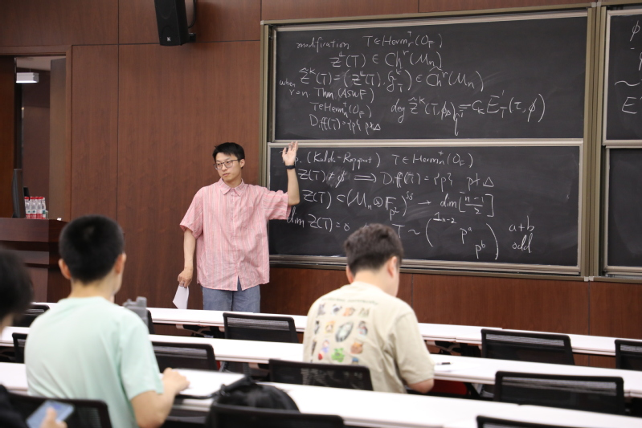

Joey Yu LUO
Department of Mathematics
University of Wisconsin - Madison
About Me
My official name is Yu LUO, "Yu" should be pronunced as "Yü", but feel free to call me Joey (or Yu).
I'm a fifth-year graduate student. My advisors are Michael Rapoport (primary) and Tonghai Yang (secondary).
I completed my undergraduate degree at Zhejiang University.
I'm interested in arithmetic algebraic geometry, with a main focus on the geometric and the arithmetic aspects of Shimura varieties.
Here is my Curriculum Vitae, my ORCID. Contact: yluo237 at wisc dot edu
I'm currently on the job market, seeking a postdoctoral position starting in Fall 2026.
Papers
See also arxiv
Seminars
Teaching
In Fall 2025, I am serving as the TA for MATH 221 Lec 003 (Prof. Autumn Kent).
My office hour is 01:00PM-03:00PM on Friday in 518 Van Vleck Hall.
I will be on leave from Nov. 09 to Nov. 23. Mingfeng Chen will sub my discussion sessions.
Photo

In memory of The Dreamers, Khalil Fong (1983 – 2025)